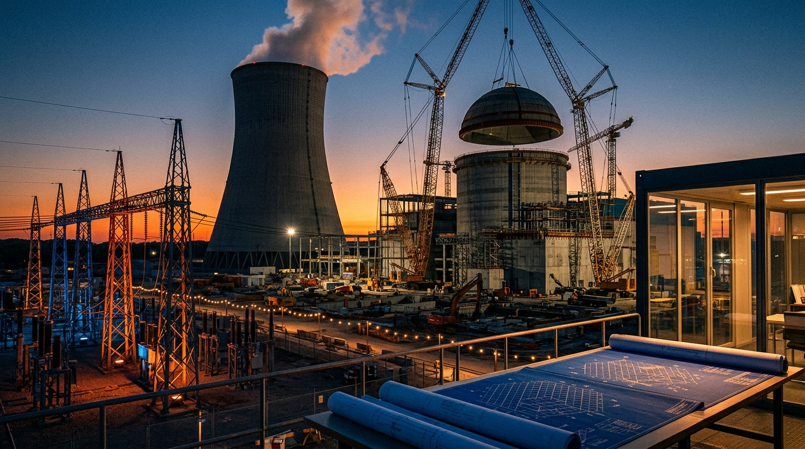

Энергетический кластер · КурчатовКурская АЭС и строящаяся АЭС-2 (ВВЭР-ТОИ)
Флагман атомной энергетики России. Строительство новейших энергоблоков поколения «3+» с реакторами ВВЭР-ТОИ мощностью 1255 МВт каждый. Высочайшие требования к качеству сварных швов 1-го контура под ультразвуковой и радиационный контроль.